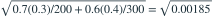
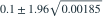

甲、乙两组独立随机抽样，甲组 200 人中成功 140 人，乙组 300 人中成功 180 人。用未合并比例的 Wald 方法，取  ，
， 的近似 95% 置信区间是哪项？
的近似 95% 置信区间是哪项？
， 的近似 95% 置信区间是哪项？- A(−0.0843, 0.0843)
- B(0.0587, 0.1413)
- C(0.1000, 0.1843)
- D(0.0157, 0.1843)
我已思考，展开答案与解析
正确答案：D
- 两组样本比例分别是 0.7 和 0.6，差的点估计为 0.1。
- 区间估计使用各自样本比例，标准误为

。 - 故区间为

，约为 (0.0157,0.1843)。
易错提醒没有施加两比例相等的原假设时，区间标准误通常不使用合并比例。
南审 813 · 2025 · 三·2(1)，PDF第2页
从大题拆分考点并重新编写选项；数值或设问有调整。
查看参考来源